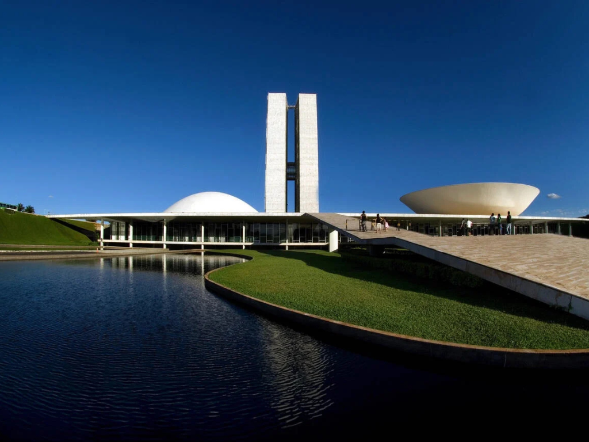

O Distrito Federal, cravado no coração do Planalto Central, é uma unidade federativa única, projetada para abrigar a capital do Brasil, Brasília. Diferente dos estados, ele não possui municípios, sendo dividido em regiões administrativas que orbitam o Plano Piloto, cujo traçado urbano em formato de avião (ou borboleta) é obra de Lúcio Costa com monumentos icônicos de Oscar Niemeyer. Além de ser o centro do poder político nacional, o "quadrado" destaca-se pelo céu de um azul profundo e horizonte infinito, além do clima tropical de altitude que define suas estações: um verão chuvoso e um inverno marcado pela seca rigorosa. Culturalmente, o DF é um caldeirão de influências de todos os cantos do país, oferecendo desde a serenidade do Lago Paranoá até a mística beleza do Cerrado, com suas chapadas e cachoeiras que cercam a região.
